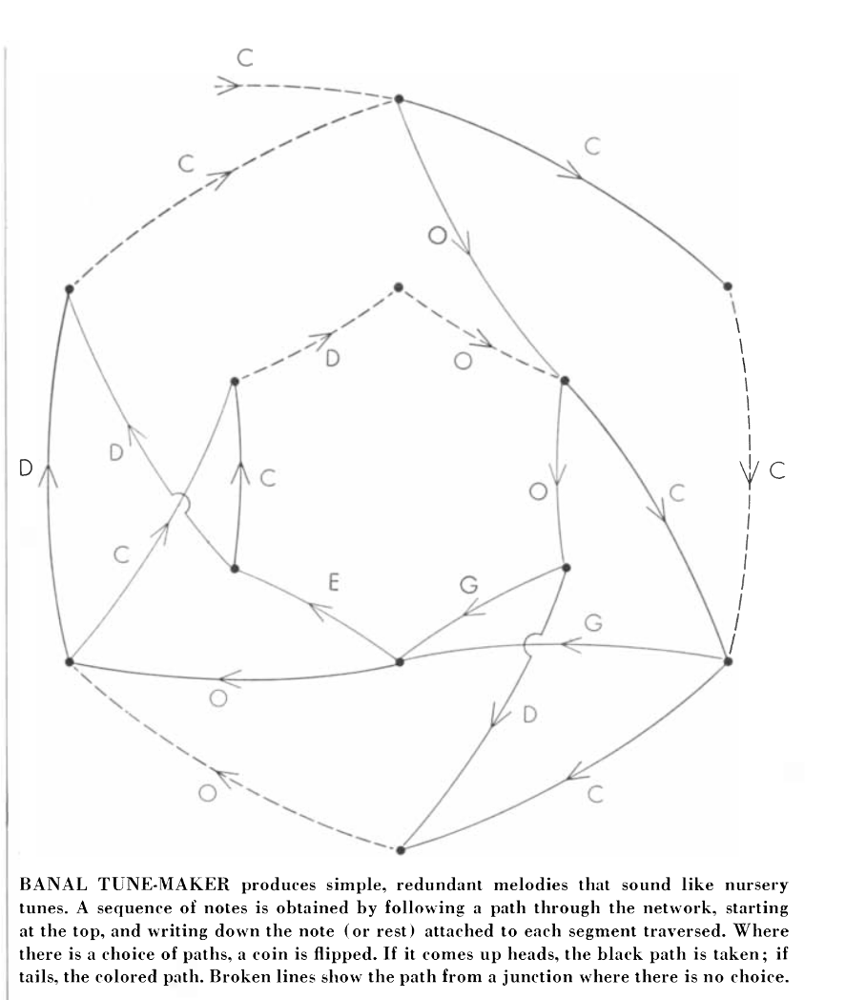
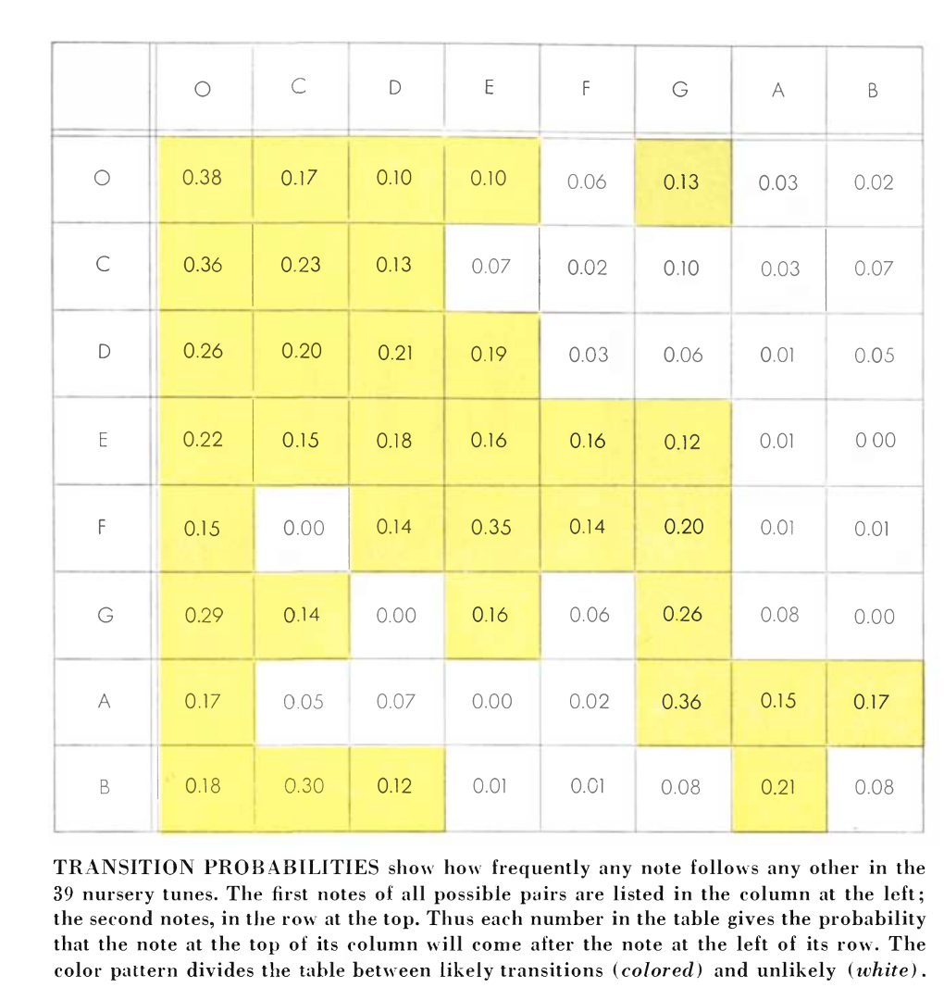
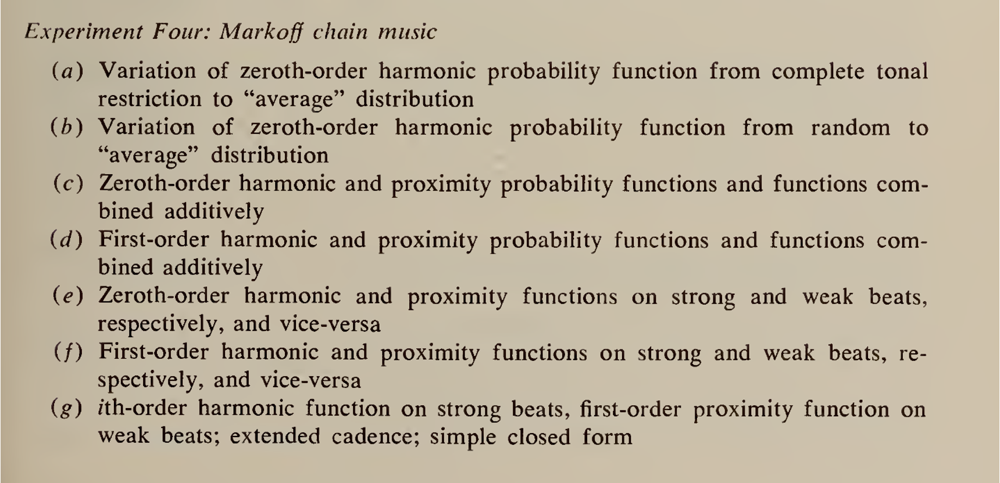
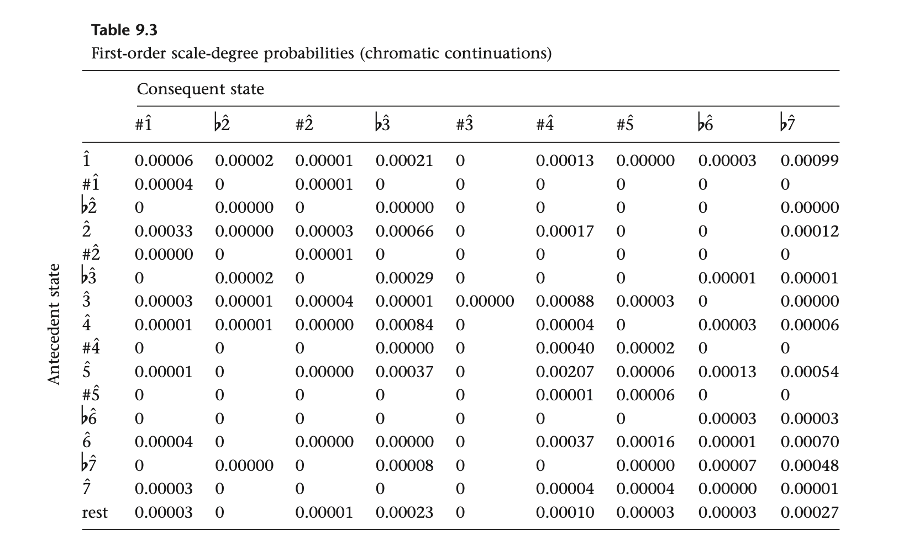
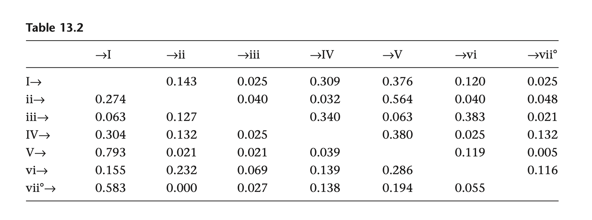
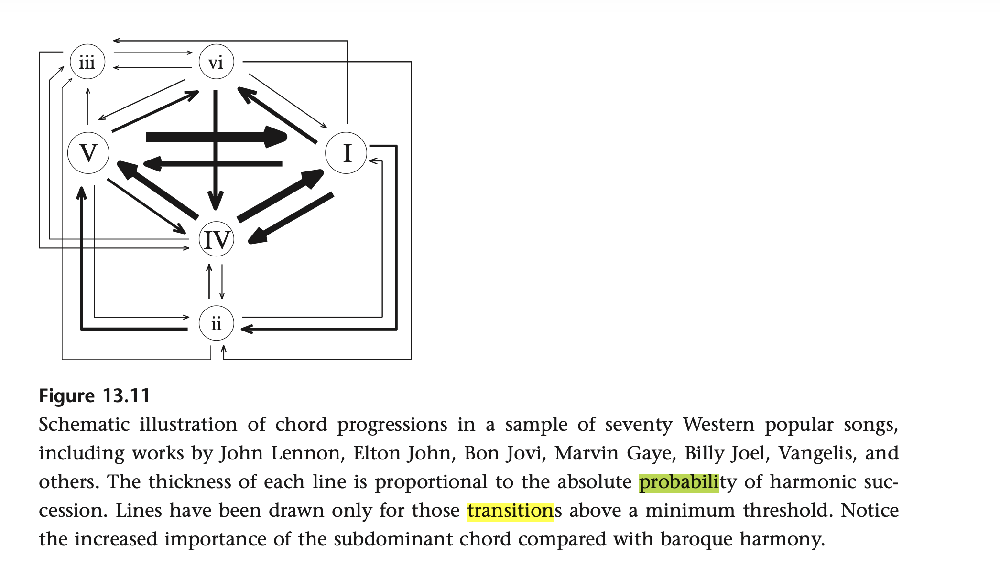
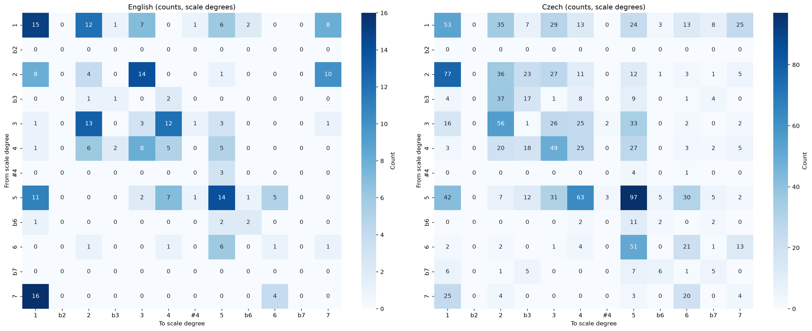
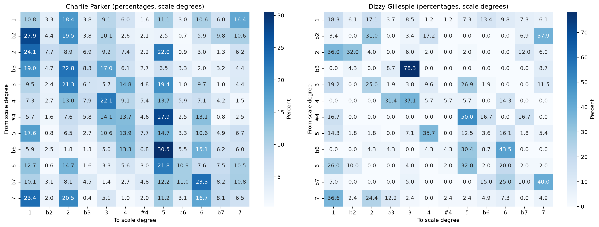
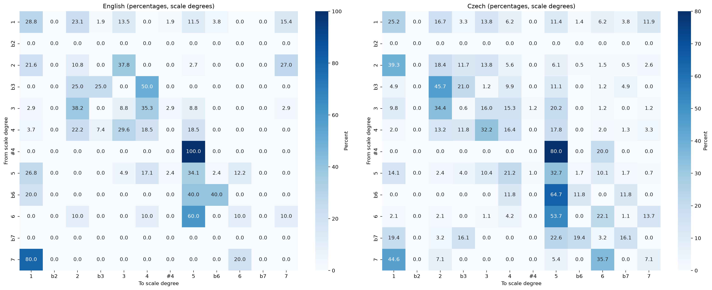
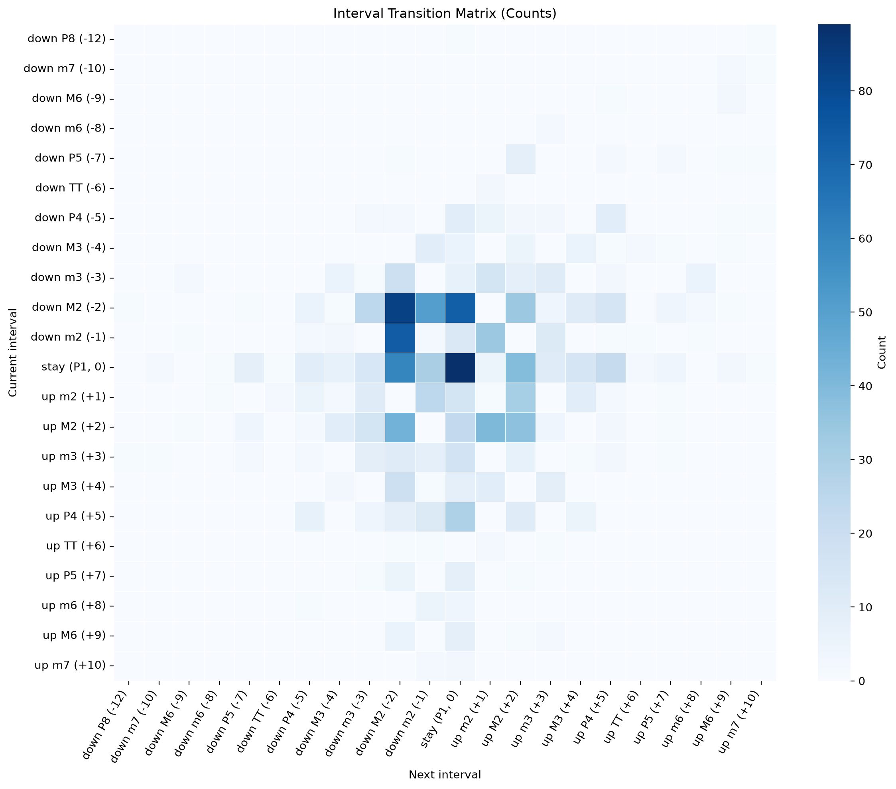

Day 2: N-grams and Melodic Tendency#
Date: Monday 22nd June 2026
Today we’re going to look at how pairs of notes transition to one another. This means bigrams, trigrams, and other collections of notes in one voice and multiple voices.
Why is the study of ngrams important in music?
Algorithmic composition
Modeling expectation
information theory is dependent upon the likelihood of what is next (Q -> U is quite expected, as is ti -> do; these would be relatively low information.)
### ignore this code!! just me trying to get colab to work...
import os, subprocess
# Clone repo and set working directory
# Safe to run in both Colab and local Jupyter
repo_url = 'https://github.com/shanahdt/huji_summer_class_2026.git'
repo_name = 'huji_summer_class_2026'
# Check if we're already inside the repo (local), or need to clone (Colab)
if not os.path.exists('../data'):
if not os.path.exists(f'/content/{repo_name}'):
subprocess.run(['git', 'clone', repo_url], check=True)
os.chdir(f'/content/{repo_name}/notebooks')
print('Cloned and changed directory.')
else:
print('Data directory found — running locally, no clone needed.')
Examples from Composition#
Pinkerton’s “Banal Tunemaker” from 1956.

The transition probabilities were constructed from a transition matrix like this:

This would also be the foundation of the earliest complete computer-generated composition, Lejaren Hiller’s Illiac Suite in 1957.

As a Marker of Expectation and Statistical Learning#
Transition probabilities are also a proxy for syntactical structures–which musical ideas move to which other ones and how often. Huron (2006) and others have discussed how these can demonstrate statistical learning. For example, the expectations generated from 7 -> 1 (in the table below):

Or the likelihood of a V chord being followed by a I chord.

Or how this is different in popular music, as demonstrated below:

Part 1: Transitions in Happy Birthday#
Let’s start with some music21 code that just looks at the most basic note-to-note transitions in “Happy Birthday”.
Counting all of the pitch combinations (as bigrams)#
##simple music21 bigram of happy birthday kern file, avoiding list comprehensions and done in a straightforward loop for beginners with comments
from music21 import converter, note, stream
# Load the Happy Birthday kern file
score = converter.parse('../data/happy_birthday.krn')
# Extract all notes from the score
### here we are creating an empty list. it's basically setting up a
### container to hold all the notes we will extract from the score!
notes = []
for element in score.recurse():
if isinstance(element, note.Note):
notes.append(element.nameWithOctave)
# Create bigrams
### here we are creating pairs of consecutive notes from our notes list. each pair is called a bigram.
bigrams = []
for i in range(len(notes) - 1):
bigrams.append((notes[i], notes[i + 1]))
# Print bigrams
for bigram in bigrams:
print(bigram)
('D4', 'D4')
('D4', 'E4')
('E4', 'D4')
('D4', 'G4')
('G4', 'F#4')
('F#4', 'D4')
('D4', 'D4')
('D4', 'E4')
('E4', 'D4')
('D4', 'A4')
('A4', 'G4')
('G4', 'D4')
('D4', 'D4')
('D4', 'D5')
('D5', 'B4')
('B4', 'G4')
('G4', 'F#4')
('F#4', 'E4')
('E4', 'C5')
('C5', 'C5')
('C5', 'B4')
('B4', 'G4')
('G4', 'A4')
('A4', 'G4')
Setting up a counter#
Now let’s set up a counter, so we can see the most common transitions.
###now that we have bigrams, we can count most common transitions.
from collections import Counter
bigram_counts = Counter(bigrams)
for bigram, count in bigram_counts.most_common():
print(f"{bigram}: {count}")
('D4', 'D4'): 3
('D4', 'E4'): 2
('E4', 'D4'): 2
('G4', 'F#4'): 2
('A4', 'G4'): 2
('B4', 'G4'): 2
('D4', 'G4'): 1
('F#4', 'D4'): 1
('D4', 'A4'): 1
('G4', 'D4'): 1
('D4', 'D5'): 1
('D5', 'B4'): 1
('F#4', 'E4'): 1
('E4', 'C5'): 1
('C5', 'C5'): 1
('C5', 'B4'): 1
('G4', 'A4'): 1
The function below takes kern files, converts them into music21 scores, and returns the most common n-grams of note names. Note how there is an argument that says how many n-grams you’d like to look at (obviosuly it gets more difficult to visualize once you go past two dimensions…)
def most_common_ngrams(kern_file_path, n=2):
from collections import Counter
from music21 import converter
# 1) Read the kern file into a music21 score.
score = converter.parse(kern_file_path)
# 2) Collect note names in order (for example: C4, D4, E4).
note_names = []
for element in score.recurse().notes:
if element.isNote:
note_names.append(element.nameWithOctave)
elif element.isChord:
# If a chord appears, include each pitch name.
for p in element.pitches:
note_names.append(p.nameWithOctave)
# 3) Check that n is valid.
if n < 1:
raise ValueError('n must be >= 1')
# 4) Build n-grams using a sliding window.
ngrams = []
for i in range(len(note_names) - n + 1):
ngrams.append(tuple(note_names[i:i + n]))
# 5) Count and return from most common to least common.
return Counter(ngrams).most_common()
And now we can run our function…
most_common_ngrams("../data/happy_birthday.krn", n=3)
[(('D4', 'D4', 'E4'), 2),
(('D4', 'E4', 'D4'), 2),
(('E4', 'D4', 'G4'), 1),
(('D4', 'G4', 'F#4'), 1),
(('G4', 'F#4', 'D4'), 1),
(('F#4', 'D4', 'D4'), 1),
(('E4', 'D4', 'A4'), 1),
(('D4', 'A4', 'G4'), 1),
(('A4', 'G4', 'D4'), 1),
(('G4', 'D4', 'D4'), 1),
(('D4', 'D4', 'D5'), 1),
(('D4', 'D5', 'B4'), 1),
(('D5', 'B4', 'G4'), 1),
(('B4', 'G4', 'F#4'), 1),
(('G4', 'F#4', 'E4'), 1),
(('F#4', 'E4', 'C5'), 1),
(('E4', 'C5', 'C5'), 1),
(('C5', 'C5', 'B4'), 1),
(('C5', 'B4', 'G4'), 1),
(('B4', 'G4', 'A4'), 1),
(('G4', 'A4', 'G4'), 1)]
Play with the function above!! Note that the tail gets longer as the size of the n-grams get bigger.
Plotting#
Now we work towards visualizing this in a couple of ways:
Raw counts. The code below gives a matrix of counts in “Happy Birthday”. Note that there are two functions. One that creates a transition matrix, and one that plots it.
As a percentage! This will take the percentage of times a “from note” goes to a certain “to note”.
# Here we have functions that create a transition matrix from weighted n-grams and plot it as a heatmap.
def create_transition_matrix(weighted_ngrams):
transition_matrix = {}
# weighted_ngrams looks like: [(("C4", "D4"), 3), (("D4", "E4"), 2), ...]
for ngram, count in weighted_ngrams:
if len(ngram) < 2:
continue
from_note = ngram[0]
to_note = ngram[1]
# If this source note is new, create its inner dictionary.
if from_note not in transition_matrix:
transition_matrix[from_note] = {}
# If this destination note is new for the source note, start at 0.
if to_note not in transition_matrix[from_note]:
transition_matrix[from_note][to_note] = 0
transition_matrix[from_note][to_note] = transition_matrix[from_note][to_note] + count
return transition_matrix
def plot_transition_matrix(transition_matrix):
import pandas as pd
import matplotlib.pyplot as plt
import seaborn as sns
# Convert nested dictionary to a table (rows = from_note, columns = to_note).
matrix_df = pd.DataFrame(transition_matrix).T.fillna(0).astype(int)
plt.figure(figsize=(8, 6))
sns.heatmap(matrix_df, annot=True, fmt='d', cmap='Blues')
plt.title('Transition Matrix (Bigram Counts)')
plt.xlabel('To note')
plt.ylabel('From note')
plt.tight_layout()
plt.show()
data = most_common_ngrams("../data/happy_birthday.krn", n=2)
matrix = create_transition_matrix(data)
plot_transition_matrix(matrix)
{kind=link}
Let’s take the functions above, but now add an option to display the transition matrix as percentages rather than raw counts.
def plot_transition_matrix(transition_matrix, as_percentages=False):
import pandas as pd
import matplotlib.pyplot as plt
import seaborn as sns
matrix_df = pd.DataFrame(transition_matrix).T.fillna(0).astype(int)
if as_percentages:
matrix_df = matrix_df.div(matrix_df.sum(axis=1), axis=0) * 100
plt.figure(figsize=(8, 6))
sns.heatmap(matrix_df, annot=True, fmt='.2f' if as_percentages else 'd', cmap='Blues')
plt.title('Transition Matrix (Bigram Counts)' if not as_percentages else 'Transition Matrix (Percentages)')
plt.xlabel('To note')
plt.ylabel('From note')
plt.tight_layout()
plt.show()
data = most_common_ngrams("../data/happy_birthday.krn", n=2)
matrix = create_transition_matrix(data)
# plot_transition_matrix(matrix, as_percentages=False)
plot_transition_matrix(matrix, as_percentages=True)
{kind=link}
Plotting exercise#
In the code below, take a piece, and plot it as raw counts and percentage. Discuss what insights the matrix might give you about the syntax of the piece.
Exercise 1: Raw counts vs percentages#
Run the transition matrix on a Czech folksong (../data/Essen/Czech/czech01.krn)
and plot it both ways — raw counts and row percentages.
Then answer in a markdown cell below:
Which cell has the highest raw count? Which row has the most even percentage distribution (i.e. the most unpredictable note)?
What does a row with one very dominant percentage tell you about that note’s melodic behavior in this piece?
Would you get a different answer if you used a different folksong from the same folder? Run it on
czech02.krnand check.
#### your Exercise 1 code here...
Transition Probabilities in an Entire Corpus#
Let’s look at two separate corpora now, comparing the transition probabilities in Charlie Parker and Dizzy Gillespie transcriptions.
Let’s compare Charlie Parker compared to Dizzy Gillespie. The code below defines shared helpers so we don’t repeat parsing/mapping logic later.
from music21 import converter
# we need glob so we can grab many files from a folder
from glob import glob
# Counter will count how often each bigram appears
from collections import Counter
# pandas is a nice library for clean tables!
import pandas as pd
# One shared label order we can reuse everywhere.
DEGREE_LABELS = ['1', 'b2', '2', 'b3', '3', '4', '#4', '5', 'b6', '6', 'b7', '7']
# Map 1..12 to chromatic scale-degree labels.
DEGREE_NAMES = {
1: '1',
2: 'b2',
3: '2',
4: 'b3',
5: '3',
6: '4',
7: '#4',
8: '5',
9: 'b6',
10: '6',
11: 'b7',
12: '7'
}
def extract_scale_degree_bigrams(file_list, corpus_name='Corpus'):
"""
Return a Counter of chromatic scale-degree bigrams found in a list of files.
Labels are: 1, b2, 2, b3, 3, 4, #4, 5, b6, 6, b7, 7.
"""
# this list will hold every bigram from every piece
all_bigrams = []
# this list keeps track of files that fail to parse
skipped_files = []
# go piece by piece
for file_path in file_list:
try:
# parse one file into a music21 score
score = converter.parse(file_path)
except Exception as exc:
# if a file is malformed, skip it and keep moving
skipped_files.append((file_path, str(exc)))
continue
# estimate key so degrees are relative to tonic
estimated_key = score.analyze('key')
tonic_pc = int(estimated_key.tonic.pitchClass)
# Keep this simple: use score.pitches order to build adjacent-note bigrams.
scale_degrees = []
for p in score.pitches:
pitch_pc = int(p.pitchClass)
degree_number = ((pitch_pc - tonic_pc) % 12) + 1
degree_label = DEGREE_NAMES[degree_number]
scale_degrees.append(degree_label)
piece_bigrams = list(zip(scale_degrees[:-1], scale_degrees[1:]))
all_bigrams.extend(piece_bigrams)
# quick transparency message if we skipped any files
if skipped_files:
print(f"{corpus_name}: skipped {len(skipped_files)} unreadable files.")
# return counts + skipped files list
return Counter(all_bigrams), skipped_files
#### note that you won't get anything out of running this cell; it's just defining functions!
### defining another function!
### this function takes a Counter of bigrams and returns
### a nicely formatted table showing the top N bigrams.
def bigram_table(counter, corpus_name, top_n=15):
#Turn a Counter into a readable top-N table.
total = sum(counter.values())
rows = []
for (d1, d2), count in counter.most_common(top_n):
percent = (count / total) * 100 if total else 0
rows.append({
'Corpus': corpus_name,
'Bigram': f"{d1}->{d2}",
'Count': count,
'Percent': f"{percent:.2f}%"
})
return pd.DataFrame(rows)
### here we have a lot of print statements.
### specifically, we are printing out the number of files in each
### corpus and the top bigrams for each musician.
# Collect files from each corpus
parker_files = sorted(glob('../data/charlie_parker/*.krn'))
dizzy_files = sorted(glob('../data/dizzy_gillespie/*.krn'))
print(f"Charlie Parker files: {len(parker_files)}")
print(f"Dizzy Gillespie files: {len(dizzy_files)}")
# 2) Count bigrams in each corpus
parker_bigrams, parker_skipped = extract_scale_degree_bigrams(parker_files, corpus_name='Charlie Parker')
dizzy_bigrams, dizzy_skipped = extract_scale_degree_bigrams(dizzy_files, corpus_name='Dizzy Gillespie')
# 3) Show top bigrams in each corpus
parker_top = bigram_table(parker_bigrams, 'Charlie Parker', top_n=15)
dizzy_top = bigram_table(dizzy_bigrams, 'Dizzy Gillespie', top_n=15)
print('\nTop Charlie Parker bigrams:')
print(parker_top.to_string(index=False))
print('\nTop Dizzy Gillespie bigrams:')
print(dizzy_top.to_string(index=False))
Charlie Parker files: 58
Dizzy Gillespie files: 13
Charlie Parker: skipped 15 unreadable files.
Dizzy Gillespie: skipped 12 unreadable files.
Top Charlie Parker bigrams:
Corpus Bigram Count Percent
Charlie Parker 2->1 738 3.23%
Charlie Parker 2->5 674 2.95%
Charlie Parker 5->1 653 2.86%
Charlie Parker 1->2 627 2.74%
Charlie Parker 1->7 560 2.45%
Charlie Parker 5->5 548 2.40%
Charlie Parker 5->4 518 2.27%
Charlie Parker 6->5 487 2.13%
Charlie Parker 3->2 451 1.97%
Charlie Parker 4->3 429 1.88%
Charlie Parker 7->1 417 1.82%
Charlie Parker 3->5 412 1.80%
Charlie Parker 5->6 395 1.73%
Charlie Parker 5->3 393 1.72%
Charlie Parker 1->5 380 1.66%
Top Dizzy Gillespie bigrams:
Corpus Bigram Count Percent
Dizzy Gillespie 5->4 20 4.28%
Dizzy Gillespie 2->1 18 3.85%
Dizzy Gillespie b3->3 18 3.85%
Dizzy Gillespie 6->5 16 3.43%
Dizzy Gillespie 2->b2 16 3.43%
Dizzy Gillespie 7->1 15 3.21%
Dizzy Gillespie 1->1 15 3.21%
Dizzy Gillespie 3->5 14 3.00%
Dizzy Gillespie 1->2 14 3.00%
Dizzy Gillespie 6->1 13 2.78%
Dizzy Gillespie 4->3 13 2.78%
Dizzy Gillespie 3->2 13 2.78%
Dizzy Gillespie b2->7 11 2.36%
Dizzy Gillespie 1->b6 11 2.36%
Dizzy Gillespie 4->b3 11 2.36%
#### and finally (!), this cell puts everything together and gives us the bigram analysis of common bigrams between the two corpora.
# 4) Show bigrams common to both corpora, ranked by combined frequency
common_bigrams = set(parker_bigrams) & set(dizzy_bigrams)
common_rows = []
for bg in common_bigrams:
parker_count = parker_bigrams[bg]
dizzy_count = dizzy_bigrams[bg]
common_rows.append({
'Bigram': f"{bg[0]}->{bg[1]}",
'Parker Count': parker_count,
'Dizzy Count': dizzy_count,
'Combined Count': parker_count + dizzy_count
})
common_df = pd.DataFrame(common_rows).sort_values('Combined Count', ascending=False).head(20)
print('\nMost common shared bigrams (top 20 by combined count):')
print(common_df.to_string(index=False))
# Optional: show skipped files for transparency
if parker_skipped or dizzy_skipped:
print('\nSkipped files (first 5 shown):')
all_skipped = parker_skipped + dizzy_skipped
for file_path, message in all_skipped[:5]:
print(f"- {file_path}: {message.splitlines()[0]}")
Most common shared bigrams (top 20 by combined count):
Bigram Parker Count Dizzy Count Combined Count
2->1 738 18 756
2->5 674 1 675
5->1 653 8 661
1->2 627 14 641
1->7 560 5 565
5->5 548 7 555
5->4 518 20 538
6->5 487 16 503
3->2 451 13 464
4->3 429 13 442
7->1 417 15 432
3->5 412 14 426
5->6 395 9 404
5->3 393 4 397
1->5 380 6 386
1->1 368 15 383
7->2 365 10 375
1->6 361 8 369
1->3 312 7 319
3->4 313 5 318
Skipped files (first 5 shown):
- ../data/charlie_parker/An_Oscar_For_Treadwell.krn: Could not determine spineType for spine with id 2
- ../data/charlie_parker/Au_Private_(No.1).krn: Could not determine spineType for spine with id 2
- ../data/charlie_parker/Au_Private_(No.2).krn: Could not determine spineType for spine with id 2
- ../data/charlie_parker/Ballade.krn: Could not determine spineType for spine with id 2
- ../data/charlie_parker/Barbados.krn: Could not determine spineType for spine with id 2
import matplotlib.pyplot as plt
import seaborn as sns
# matrix builder (works for counts or row percentages).
def counter_to_degree_matrix(counter, value_type='counts'):
# Step 1: start with a 12x12 table filled with zeros.
matrix = {}
for from_degree in DEGREE_LABELS:
matrix[from_degree] = {}
for to_degree in DEGREE_LABELS:
matrix[from_degree][to_degree] = 0
# Step 2: fill raw counts from the Counter.
for bigram, count in counter.items():
from_degree = bigram[0]
to_degree = bigram[1]
matrix[from_degree][to_degree] = count
# Step 3: convert rows to percentages if requested.
if value_type == 'percentages':
for from_degree in DEGREE_LABELS:
row_total = 0
for to_degree in DEGREE_LABELS:
row_total += matrix[from_degree][to_degree]
if row_total > 0:
for to_degree in DEGREE_LABELS:
matrix[from_degree][to_degree] = (matrix[from_degree][to_degree] / row_total) * 100
# Step 4: return as DataFrame for easier plotting/printing.
return pd.DataFrame(matrix).T
def plot_two_degree_matrices(left_matrix, right_matrix, left_name, right_name, value_type):
# Make two side-by-side heatmaps.
fig, axes = plt.subplots(1, 2, figsize=(22, 9), sharex=False, sharey=False)
# Plot formatting changes depending on counts vs percentages.
if value_type == 'counts':
number_format = 'g'
color_bar_label = 'Count'
else:
number_format = '.1f'
color_bar_label = 'Percent'
# Left corpus heatmap.
sns.heatmap(
left_matrix,
annot=True,
fmt=number_format,
cmap='Blues',
ax=axes[0],
cbar_kws={'label': color_bar_label}
)
axes[0].set_title(left_name + ' (' + value_type + ', scale degrees)')
axes[0].set_xlabel('To scale degree')
axes[0].set_ylabel('From scale degree')
# Right corpus heatmap.
sns.heatmap(
right_matrix,
annot=True,
fmt=number_format,
cmap='Blues',
ax=axes[1],
cbar_kws={'label': color_bar_label}
)
axes[1].set_title(right_name + ' (' + value_type + ', scale degrees)')
axes[1].set_xlabel('To scale degree')
axes[1].set_ylabel('From scale degree')
plt.tight_layout()
plt.show()
def compare_two_corpora_bigrams(
left_files,
right_files,
left_name='Corpus A',
right_name='Corpus B',
value_type='counts',
top_n=None
):
"""
Build key-relative chromatic SCALE-DEGREE bigram matrices for two corpora
and show them side by side.
Degree labels used:
1, b2, 2, b3, 3, 4, #4, 5, b6, 6, b7, 7
"""
# Step 1: make sure the mode is valid.
if value_type != 'counts' and value_type != 'percentages':
raise ValueError("value_type must be 'counts' or 'percentages'")
# Step 2: get bigram counters for both corpora using the shared extractor above.
left_counter, _ = extract_scale_degree_bigrams(
left_files,
corpus_name=left_name
)
right_counter, _ = extract_scale_degree_bigrams(
right_files,
corpus_name=right_name
)
# Step 3 (optional): keep only top N bigrams if requested.
if top_n is not None:
left_top_counter = Counter()
for bigram, count in left_counter.most_common(top_n):
left_top_counter[bigram] = count
left_counter = left_top_counter
right_top_counter = Counter()
for bigram, count in right_counter.most_common(top_n):
right_top_counter[bigram] = count
right_counter = right_top_counter
# Step 4: turn counters into 12x12 matrices.
left_matrix = counter_to_degree_matrix(left_counter, value_type=value_type)
right_matrix = counter_to_degree_matrix(right_counter, value_type=value_type)
# Step 5: plot both matrices side by side.
plot_two_degree_matrices(left_matrix, right_matrix, left_name, right_name, value_type)
# Step 6: return outputs in case we want to reuse them later.
return left_matrix, right_matrix
### now let's run it!
# File lists for each artist corpus
english = sorted(glob('../data/Essen/England/*.krn'))
czech = sorted(glob('../data/Essen/Czech/*.krn'))
print('English files:', len(english))
print('Czech files:', len(czech))
# Example call (raw counts, scale-degree representation).
compare_two_corpora_bigrams(
english,
czech,
left_name='English',
right_name='Czech',
value_type='counts',
top_n=None
)
English files: 4
Czech files: 43
{kind=link}

( 1 b2 2 b3 3 4 #4 5 b6 6 b7 7
1 15 0 12 1 7 0 1 6 2 0 0 8
b2 0 0 0 0 0 0 0 0 0 0 0 0
2 8 0 4 0 14 0 0 1 0 0 0 10
b3 0 0 1 1 0 2 0 0 0 0 0 0
3 1 0 13 0 3 12 1 3 0 0 0 1
4 1 0 6 2 8 5 0 5 0 0 0 0
#4 0 0 0 0 0 0 0 3 0 0 0 0
5 11 0 0 0 2 7 1 14 1 5 0 0
b6 1 0 0 0 0 0 0 2 2 0 0 0
6 0 0 1 0 0 1 0 6 0 1 0 1
b7 0 0 0 0 0 0 0 0 0 0 0 0
7 16 0 0 0 0 0 0 0 0 4 0 0,
1 b2 2 b3 3 4 #4 5 b6 6 b7 7
1 53 0 35 7 29 13 0 24 3 13 8 25
b2 0 0 0 0 0 0 0 0 0 0 0 0
2 77 0 36 23 27 11 0 12 1 3 1 5
b3 4 0 37 17 1 8 0 9 0 1 4 0
3 16 0 56 1 26 25 2 33 0 2 0 2
4 3 0 20 18 49 25 0 27 0 3 2 5
#4 0 0 0 0 0 0 0 4 0 1 0 0
5 42 0 7 12 31 63 3 97 5 30 5 2
b6 0 0 0 0 0 2 0 11 2 0 2 0
6 2 0 2 0 1 4 0 51 0 21 1 13
b7 6 0 1 5 0 0 0 7 6 1 5 0
7 25 0 4 0 0 0 0 3 0 20 0 4)
# Run the same comparison, but now as row percentages (chromatic).
compare_two_corpora_bigrams(
parker_files,
dizzy_files,
left_name='Charlie Parker',
right_name='Dizzy Gillespie',
value_type='percentages',
top_n=None
)
Charlie Parker: skipped 15 unreadable files.
Dizzy Gillespie: skipped 12 unreadable files.
----- Charlie Parker scale-degree matrix (percentages) -----
1 b2 2 b3 3 4 #4 \
1 10.779145 3.309900 18.365554 3.778559 9.138840 6.033978 1.552431
b2 27.900147 4.405286 19.530103 3.817915 10.132159 2.643172 2.055800
2 24.141315 7.687275 8.930324 6.902192 9.224730 7.425581 2.224403
b3 19.028340 4.655870 22.773279 8.299595 17.004049 6.072874 2.732794
3 9.472196 2.403393 21.253534 6.079171 5.702168 14.750236 4.759661
4 7.275542 2.734778 13.003096 7.894737 22.136223 9.133127 5.417957
#4 5.695509 1.642935 7.557503 5.805038 14.129244 13.691128 4.600219
5 17.558483 0.833557 6.453348 2.715784 10.567357 13.928475 7.663350
b6 5.869565 2.500000 1.847826 1.304348 5.000000 13.260870 6.847826
6 12.729718 0.627521 14.701927 1.568803 3.316898 5.602869 3.047961
b7 10.064044 3.110704 8.051235 4.483074 1.372370 2.653248 4.757548
7 23.426966 2.022472 20.505618 0.393258 5.056180 0.955056 1.966292
5 b6 6 b7 7
1 11.130639 2.958407 10.574107 5.975395 16.403046
b2 2.496329 0.734214 5.873715 9.838473 10.572687
2 22.047759 0.883219 3.042198 1.308472 6.182532
b3 6.477733 3.340081 2.024291 3.238866 4.352227
3 19.415646 1.036758 9.707823 0.989632 4.429783
4 13.673891 5.933953 7.069143 4.179567 1.547988
#4 27.929901 2.519168 13.143483 0.766703 2.519168
5 14.735144 3.334230 10.621135 4.893789 6.695348
b6 30.543478 5.543478 15.108696 6.195652 5.978261
6 21.828776 10.891977 7.619901 7.530255 10.533393
b7 12.168344 10.978957 23.330284 8.234218 10.795974
7 11.235955 3.146067 16.741573 8.089888 6.460674
----- Dizzy Gillespie scale-degree matrix (percentages) -----
1 b2 2 b3 3 4 \
1 18.292683 6.097561 17.073171 3.658537 8.536585 1.219512
b2 3.448276 0.000000 31.034483 0.000000 3.448276 17.241379
2 36.000000 32.000000 4.000000 0.000000 6.000000 2.000000
b3 0.000000 4.347826 0.000000 8.695652 78.260870 0.000000
3 19.230769 0.000000 25.000000 1.923077 3.846154 9.615385
4 0.000000 0.000000 0.000000 31.428571 37.142857 5.714286
#4 16.666667 0.000000 0.000000 0.000000 0.000000 0.000000
5 14.285714 1.785714 1.785714 0.000000 7.142857 35.714286
b6 0.000000 0.000000 4.347826 4.347826 0.000000 4.347826
6 26.000000 10.000000 0.000000 0.000000 4.000000 0.000000
b7 5.000000 0.000000 0.000000 0.000000 5.000000 0.000000
7 36.585366 2.439024 24.390244 12.195122 2.439024 0.000000
#4 5 b6 6 b7 7
1 1.219512 7.317073 13.414634 9.756098 7.317073 6.097561
b2 0.000000 0.000000 0.000000 0.000000 6.896552 37.931034
2 0.000000 2.000000 0.000000 0.000000 12.000000 6.000000
b3 0.000000 0.000000 0.000000 0.000000 0.000000 8.695652
3 0.000000 26.923077 1.923077 0.000000 0.000000 11.538462
4 5.714286 5.714286 0.000000 14.285714 0.000000 0.000000
#4 0.000000 50.000000 16.666667 0.000000 16.666667 0.000000
5 0.000000 12.500000 3.571429 16.071429 1.785714 5.357143
b6 4.347826 30.434783 8.695652 43.478261 0.000000 0.000000
6 2.000000 32.000000 2.000000 20.000000 2.000000 2.000000
b7 0.000000 0.000000 15.000000 25.000000 10.000000 40.000000
7 2.439024 2.439024 4.878049 7.317073 0.000000 4.878049
{kind=link}

( 1 b2 2 b3 3 4 #4 \
1 10.779145 3.309900 18.365554 3.778559 9.138840 6.033978 1.552431
b2 27.900147 4.405286 19.530103 3.817915 10.132159 2.643172 2.055800
2 24.141315 7.687275 8.930324 6.902192 9.224730 7.425581 2.224403
b3 19.028340 4.655870 22.773279 8.299595 17.004049 6.072874 2.732794
3 9.472196 2.403393 21.253534 6.079171 5.702168 14.750236 4.759661
4 7.275542 2.734778 13.003096 7.894737 22.136223 9.133127 5.417957
#4 5.695509 1.642935 7.557503 5.805038 14.129244 13.691128 4.600219
5 17.558483 0.833557 6.453348 2.715784 10.567357 13.928475 7.663350
b6 5.869565 2.500000 1.847826 1.304348 5.000000 13.260870 6.847826
6 12.729718 0.627521 14.701927 1.568803 3.316898 5.602869 3.047961
b7 10.064044 3.110704 8.051235 4.483074 1.372370 2.653248 4.757548
7 23.426966 2.022472 20.505618 0.393258 5.056180 0.955056 1.966292
5 b6 6 b7 7
1 11.130639 2.958407 10.574107 5.975395 16.403046
b2 2.496329 0.734214 5.873715 9.838473 10.572687
2 22.047759 0.883219 3.042198 1.308472 6.182532
b3 6.477733 3.340081 2.024291 3.238866 4.352227
3 19.415646 1.036758 9.707823 0.989632 4.429783
4 13.673891 5.933953 7.069143 4.179567 1.547988
#4 27.929901 2.519168 13.143483 0.766703 2.519168
5 14.735144 3.334230 10.621135 4.893789 6.695348
b6 30.543478 5.543478 15.108696 6.195652 5.978261
6 21.828776 10.891977 7.619901 7.530255 10.533393
b7 12.168344 10.978957 23.330284 8.234218 10.795974
7 11.235955 3.146067 16.741573 8.089888 6.460674 ,
1 b2 2 b3 3 4 \
1 18.292683 6.097561 17.073171 3.658537 8.536585 1.219512
b2 3.448276 0.000000 31.034483 0.000000 3.448276 17.241379
2 36.000000 32.000000 4.000000 0.000000 6.000000 2.000000
b3 0.000000 4.347826 0.000000 8.695652 78.260870 0.000000
3 19.230769 0.000000 25.000000 1.923077 3.846154 9.615385
4 0.000000 0.000000 0.000000 31.428571 37.142857 5.714286
#4 16.666667 0.000000 0.000000 0.000000 0.000000 0.000000
5 14.285714 1.785714 1.785714 0.000000 7.142857 35.714286
b6 0.000000 0.000000 4.347826 4.347826 0.000000 4.347826
6 26.000000 10.000000 0.000000 0.000000 4.000000 0.000000
b7 5.000000 0.000000 0.000000 0.000000 5.000000 0.000000
7 36.585366 2.439024 24.390244 12.195122 2.439024 0.000000
#4 5 b6 6 b7 7
1 1.219512 7.317073 13.414634 9.756098 7.317073 6.097561
b2 0.000000 0.000000 0.000000 0.000000 6.896552 37.931034
2 0.000000 2.000000 0.000000 0.000000 12.000000 6.000000
b3 0.000000 0.000000 0.000000 0.000000 0.000000 8.695652
3 0.000000 26.923077 1.923077 0.000000 0.000000 11.538462
4 5.714286 5.714286 0.000000 14.285714 0.000000 0.000000
#4 0.000000 50.000000 16.666667 0.000000 16.666667 0.000000
5 0.000000 12.500000 3.571429 16.071429 1.785714 5.357143
b6 4.347826 30.434783 8.695652 43.478261 0.000000 0.000000
6 2.000000 32.000000 2.000000 20.000000 2.000000 2.000000
b7 0.000000 0.000000 15.000000 25.000000 10.000000 40.000000
7 2.439024 2.439024 4.878049 7.317073 0.000000 4.878049 )
Exercise 2: A third corpus#
The notebook compared Parker and Dizzy. Now add a third corpus of your choice from the Essen collection (e.g. England, Polska, Rossiya).
Use compare_two_corpora_bigrams() to compare it against one of the jazz corpora.
Then answer:
Which bigrams appear in both the jazz corpus and the folk corpus? Are they musically surprising or expected?
What does the comparison tell you about the limits of scale-degree bigrams as a cross-repertoire similarity measure?
# File lists for each artist corpus
english = sorted(glob('../data/Essen/England/*.krn'))
czech = sorted(glob('../data/Essen/Czech/*.krn'))
print('English files:', len(english))
print('Czech files:', len(czech))
# Example call (raw counts, scale-degree representation).
compare_two_corpora_bigrams(
english,
czech,
left_name='English',
right_name='Czech',
value_type='percentages',
top_n=None
)
English files: 4
Czech files: 43
{kind=link}

( 1 b2 2 b3 3 4 #4 \
1 28.846154 0.0 23.076923 1.923077 13.461538 0.000000 1.923077
b2 0.000000 0.0 0.000000 0.000000 0.000000 0.000000 0.000000
2 21.621622 0.0 10.810811 0.000000 37.837838 0.000000 0.000000
b3 0.000000 0.0 25.000000 25.000000 0.000000 50.000000 0.000000
3 2.941176 0.0 38.235294 0.000000 8.823529 35.294118 2.941176
4 3.703704 0.0 22.222222 7.407407 29.629630 18.518519 0.000000
#4 0.000000 0.0 0.000000 0.000000 0.000000 0.000000 0.000000
5 26.829268 0.0 0.000000 0.000000 4.878049 17.073171 2.439024
b6 20.000000 0.0 0.000000 0.000000 0.000000 0.000000 0.000000
6 0.000000 0.0 10.000000 0.000000 0.000000 10.000000 0.000000
b7 0.000000 0.0 0.000000 0.000000 0.000000 0.000000 0.000000
7 80.000000 0.0 0.000000 0.000000 0.000000 0.000000 0.000000
5 b6 6 b7 7
1 11.538462 3.846154 0.000000 0.0 15.384615
b2 0.000000 0.000000 0.000000 0.0 0.000000
2 2.702703 0.000000 0.000000 0.0 27.027027
b3 0.000000 0.000000 0.000000 0.0 0.000000
3 8.823529 0.000000 0.000000 0.0 2.941176
4 18.518519 0.000000 0.000000 0.0 0.000000
#4 100.000000 0.000000 0.000000 0.0 0.000000
5 34.146341 2.439024 12.195122 0.0 0.000000
b6 40.000000 40.000000 0.000000 0.0 0.000000
6 60.000000 0.000000 10.000000 0.0 10.000000
b7 0.000000 0.000000 0.000000 0.0 0.000000
7 0.000000 0.000000 20.000000 0.0 0.000000 ,
1 b2 2 b3 3 4 #4 \
1 25.238095 0.0 16.666667 3.333333 13.809524 6.190476 0.000000
b2 0.000000 0.0 0.000000 0.000000 0.000000 0.000000 0.000000
2 39.285714 0.0 18.367347 11.734694 13.775510 5.612245 0.000000
b3 4.938272 0.0 45.679012 20.987654 1.234568 9.876543 0.000000
3 9.815951 0.0 34.355828 0.613497 15.950920 15.337423 1.226994
4 1.973684 0.0 13.157895 11.842105 32.236842 16.447368 0.000000
#4 0.000000 0.0 0.000000 0.000000 0.000000 0.000000 0.000000
5 14.141414 0.0 2.356902 4.040404 10.437710 21.212121 1.010101
b6 0.000000 0.0 0.000000 0.000000 0.000000 11.764706 0.000000
6 2.105263 0.0 2.105263 0.000000 1.052632 4.210526 0.000000
b7 19.354839 0.0 3.225806 16.129032 0.000000 0.000000 0.000000
7 44.642857 0.0 7.142857 0.000000 0.000000 0.000000 0.000000
5 b6 6 b7 7
1 11.428571 1.428571 6.190476 3.809524 11.904762
b2 0.000000 0.000000 0.000000 0.000000 0.000000
2 6.122449 0.510204 1.530612 0.510204 2.551020
b3 11.111111 0.000000 1.234568 4.938272 0.000000
3 20.245399 0.000000 1.226994 0.000000 1.226994
4 17.763158 0.000000 1.973684 1.315789 3.289474
#4 80.000000 0.000000 20.000000 0.000000 0.000000
5 32.659933 1.683502 10.101010 1.683502 0.673401
b6 64.705882 11.764706 0.000000 11.764706 0.000000
6 53.684211 0.000000 22.105263 1.052632 13.684211
b7 22.580645 19.354839 3.225806 16.129032 0.000000
7 5.357143 0.000000 35.714286 0.000000 7.142857 )
Bigrams with Beat Strength#
So far, we have looked at bigrams as note-to-note pitch patterns. Now we will keep that same idea, but focus only on beat strength.
In this section, we use music21’s beatStrength to filter notes before counting bigrams.
That means we can compare bigrams from:
all notes
strong beats
medium-strength beats
weak beats
For now, we are staying with beat-strength filtering only, so the workflow stays simple and consistent for everyone.
music21 has a nice beatStrength tool that can be useful for filtering things out.
def top_bigrams_df(counter, corpus_name, beat_filter='all', top_n=10):
"""Turn a Counter into a clean top-N table for display."""
total = sum(counter.values())
rows = []
for (d1, d2), count in counter.most_common(top_n):
percent = (count / total) * 100 if total else 0
rows.append({
'Corpus': corpus_name,
'Filter': beat_filter,
'Bigram': f"{d1}->{d2}",
'Count': count,
'Percent': f"{percent:.2f}%"
})
return pd.DataFrame(rows)
# Beginner-friendly beat-strength filters.
beat_filters = [
'all',
'strong_>=0.75',
'medium_0.5_to_<0.75',
'weak_<0.5',
]
# Load .krn files for each corpus (so this section works on its own).
# Step 1: get all English .krn files from the folder.
english = sorted(glob('../data/Essen/England/*.krn'))
# Step 2: get all Czech .krn files from the folder.
czech = sorted(glob('../data/Essen/Czech/*.krn'))
# Step 3: print how many files we found.
print('English files:', len(english))
print('Czech files:', len(czech))
English files: 4
Czech files: 43
# One corpus + one beat-strength filter (beginner version)
# Step 1: pick one corpus.
selected_files = english
selected_corpus_name = 'English' # change to 'Czech' and czech files if you want
# Step 2: pick one beat-strength filter.
# You can use short names: 'strong', 'medium', 'weak'
selected_filter = 'strong' # also works: 'all', 'strong_>=0.75', 'medium_0.5_to_<0.75', 'weak_<0.5'
# Step 3: extract bigrams for this one corpus and this one filter.
selected_counter, skipped_files = extract_scale_degree_bigrams_by_beatstrength(
selected_files,
corpus_name=selected_corpus_name,
strength_filter=selected_filter
)
# Step 4: build a top-10 table.
selected_table = top_bigrams_df(
selected_counter,
corpus_name=selected_corpus_name,
beat_filter=selected_filter,
top_n=10
)
# Step 5: show simple output.
print('Corpus:', selected_corpus_name)
print('Filter:', selected_filter)
print('Files skipped:', len(skipped_files))
display(selected_table)
Corpus: English
Filter: strong
Files skipped: 0
| Corpus | Filter | Bigram | Count | Percent | |
|---|---|---|---|---|---|
| 0 | English | strong | 1->1 | 9 | 12.68% |
| 1 | English | strong | 3->2 | 6 | 8.45% |
| 2 | English | strong | 1->5 | 6 | 8.45% |
| 3 | English | strong | 5->1 | 5 | 7.04% |
| 4 | English | strong | 1->7 | 4 | 5.63% |
| 5 | English | strong | 2->1 | 4 | 5.63% |
| 6 | English | strong | 4->3 | 4 | 5.63% |
| 7 | English | strong | 1->3 | 4 | 5.63% |
| 8 | English | strong | 2->2 | 3 | 4.23% |
| 9 | English | strong | 5->5 | 3 | 4.23% |
# We run the SAME workflow once for each beat-strength group.
# This is intentionally repetitive so beginners can follow every step.
for beat_strength_group in beat_filters:
# ------------------------------------------------------------
# Step 1: print a clear header so we know which filter we are in.
# ------------------------------------------------------------
print("\n" + "=" * 80)
print("Beat-strength filter:", beat_strength_group)
print("=" * 80)
# ------------------------------------------------------------
# Step 2: collect bigrams from the English corpus for this filter.
# ------------------------------------------------------------
english_counter, _ = extract_scale_degree_bigrams_by_beatstrength(
english,
corpus_name='English',
strength_filter=beat_strength_group
)
# ------------------------------------------------------------
# Step 3: collect bigrams from the Czech corpus for this filter.
# ------------------------------------------------------------
czech_counter, _ = extract_scale_degree_bigrams_by_beatstrength(
czech,
corpus_name='Czech',
strength_filter=beat_strength_group
)
# ------------------------------------------------------------
# Step 4: turn the counters into clean top-10 tables.
# ------------------------------------------------------------
english_table = top_bigrams_df(
english_counter,
corpus_name='English',
beat_filter=beat_strength_group,
top_n=10
)
czech_table = top_bigrams_df(
czech_counter,
corpus_name='Czech',
beat_filter=beat_strength_group,
top_n=10
)
# ------------------------------------------------------------
# Step 5: show both tables in the notebook output.
# ------------------------------------------------------------
display(english_table)
display(czech_table)
================================================================================
Beat-strength filter: all
================================================================================
| Corpus | Filter | Bigram | Count | Percent | |
|---|---|---|---|---|---|
| 0 | English | all | 7->1 | 16 | 6.87% |
| 1 | English | all | 1->1 | 15 | 6.44% |
| 2 | English | all | 2->3 | 14 | 6.01% |
| 3 | English | all | 5->5 | 14 | 6.01% |
| 4 | English | all | 3->2 | 13 | 5.58% |
| 5 | English | all | 1->2 | 12 | 5.15% |
| 6 | English | all | 3->4 | 12 | 5.15% |
| 7 | English | all | 5->1 | 11 | 4.72% |
| 8 | English | all | 2->7 | 10 | 4.29% |
| 9 | English | all | 1->7 | 8 | 3.43% |
| Corpus | Filter | Bigram | Count | Percent | |
|---|---|---|---|---|---|
| 0 | Czech | all | 5->5 | 97 | 7.44% |
| 1 | Czech | all | 2->1 | 77 | 5.91% |
| 2 | Czech | all | 5->4 | 63 | 4.83% |
| 3 | Czech | all | 3->2 | 56 | 4.30% |
| 4 | Czech | all | 1->1 | 53 | 4.07% |
| 5 | Czech | all | 6->5 | 51 | 3.91% |
| 6 | Czech | all | 4->3 | 49 | 3.76% |
| 7 | Czech | all | 5->1 | 42 | 3.22% |
| 8 | Czech | all | b3->2 | 37 | 2.84% |
| 9 | Czech | all | 2->2 | 36 | 2.76% |
================================================================================
Beat-strength filter: strong_>=0.75
================================================================================
| Corpus | Filter | Bigram | Count | Percent | |
|---|---|---|---|---|---|
| 0 | English | strong_>=0.75 | 1->1 | 9 | 12.68% |
| 1 | English | strong_>=0.75 | 3->2 | 6 | 8.45% |
| 2 | English | strong_>=0.75 | 1->5 | 6 | 8.45% |
| 3 | English | strong_>=0.75 | 5->1 | 5 | 7.04% |
| 4 | English | strong_>=0.75 | 1->7 | 4 | 5.63% |
| 5 | English | strong_>=0.75 | 2->1 | 4 | 5.63% |
| 6 | English | strong_>=0.75 | 4->3 | 4 | 5.63% |
| 7 | English | strong_>=0.75 | 1->3 | 4 | 5.63% |
| 8 | English | strong_>=0.75 | 2->2 | 3 | 4.23% |
| 9 | English | strong_>=0.75 | 5->5 | 3 | 4.23% |
| Corpus | Filter | Bigram | Count | Percent | |
|---|---|---|---|---|---|
| 0 | Czech | strong_>=0.75 | 5->5 | 24 | 7.69% |
| 1 | Czech | strong_>=0.75 | 5->1 | 15 | 4.81% |
| 2 | Czech | strong_>=0.75 | 3->1 | 11 | 3.53% |
| 3 | Czech | strong_>=0.75 | 1->3 | 11 | 3.53% |
| 4 | Czech | strong_>=0.75 | 2->1 | 9 | 2.88% |
| 5 | Czech | strong_>=0.75 | 1->1 | 9 | 2.88% |
| 6 | Czech | strong_>=0.75 | 4->1 | 9 | 2.88% |
| 7 | Czech | strong_>=0.75 | 1->4 | 9 | 2.88% |
| 8 | Czech | strong_>=0.75 | 1->b3 | 9 | 2.88% |
| 9 | Czech | strong_>=0.75 | 2->5 | 8 | 2.56% |
================================================================================
Beat-strength filter: medium_0.5_to_<0.75
================================================================================
| Corpus | Filter | Bigram | Count | Percent | |
|---|---|---|---|---|---|
| 0 | English | medium_0.5_to_<0.75 | 2->3 | 9 | 11.69% |
| 1 | English | medium_0.5_to_<0.75 | 3->4 | 7 | 9.09% |
| 2 | English | medium_0.5_to_<0.75 | 4->3 | 5 | 6.49% |
| 3 | English | medium_0.5_to_<0.75 | 3->7 | 5 | 6.49% |
| 4 | English | medium_0.5_to_<0.75 | 5->2 | 5 | 6.49% |
| 5 | English | medium_0.5_to_<0.75 | 1->1 | 4 | 5.19% |
| 6 | English | medium_0.5_to_<0.75 | 1->2 | 3 | 3.90% |
| 7 | English | medium_0.5_to_<0.75 | 7->5 | 3 | 3.90% |
| 8 | English | medium_0.5_to_<0.75 | 1->5 | 3 | 3.90% |
| 9 | English | medium_0.5_to_<0.75 | 3->6 | 3 | 3.90% |
| Corpus | Filter | Bigram | Count | Percent | |
|---|---|---|---|---|---|
| 0 | Czech | medium_0.5_to_<0.75 | 5->2 | 18 | 6.25% |
| 1 | Czech | medium_0.5_to_<0.75 | 5->3 | 17 | 5.90% |
| 2 | Czech | medium_0.5_to_<0.75 | 5->5 | 14 | 4.86% |
| 3 | Czech | medium_0.5_to_<0.75 | 2->5 | 11 | 3.82% |
| 4 | Czech | medium_0.5_to_<0.75 | 2->1 | 11 | 3.82% |
| 5 | Czech | medium_0.5_to_<0.75 | 2->2 | 10 | 3.47% |
| 6 | Czech | medium_0.5_to_<0.75 | 3->3 | 10 | 3.47% |
| 7 | Czech | medium_0.5_to_<0.75 | 1->5 | 10 | 3.47% |
| 8 | Czech | medium_0.5_to_<0.75 | 3->5 | 9 | 3.12% |
| 9 | Czech | medium_0.5_to_<0.75 | 4->5 | 9 | 3.12% |
================================================================================
Beat-strength filter: weak_<0.5
================================================================================
| Corpus | Filter | Bigram | Count | Percent | |
|---|---|---|---|---|---|
| 0 | English | weak_<0.5 | 5->5 | 5 | 6.49% |
| 1 | English | weak_<0.5 | 5->7 | 5 | 6.49% |
| 2 | English | weak_<0.5 | 7->5 | 5 | 6.49% |
| 3 | English | weak_<0.5 | 2->1 | 4 | 5.19% |
| 4 | English | weak_<0.5 | 1->4 | 4 | 5.19% |
| 5 | English | weak_<0.5 | 4->2 | 4 | 5.19% |
| 6 | English | weak_<0.5 | 1->2 | 3 | 3.90% |
| 7 | English | weak_<0.5 | 1->1 | 3 | 3.90% |
| 8 | English | weak_<0.5 | 2->7 | 3 | 3.90% |
| 9 | English | weak_<0.5 | 4->1 | 2 | 2.60% |
| Corpus | Filter | Bigram | Count | Percent | |
|---|---|---|---|---|---|
| 0 | Czech | weak_<0.5 | 5->5 | 35 | 6.36% |
| 1 | Czech | weak_<0.5 | 3->1 | 22 | 4.00% |
| 2 | Czech | weak_<0.5 | 2->2 | 21 | 3.82% |
| 3 | Czech | weak_<0.5 | 5->3 | 20 | 3.64% |
| 4 | Czech | weak_<0.5 | 6->5 | 19 | 3.45% |
| 5 | Czech | weak_<0.5 | 5->1 | 17 | 3.09% |
| 6 | Czech | weak_<0.5 | 1->6 | 17 | 3.09% |
| 7 | Czech | weak_<0.5 | 1->3 | 16 | 2.91% |
| 8 | Czech | weak_<0.5 | 3->5 | 16 | 2.91% |
| 9 | Czech | weak_<0.5 | 1->1 | 16 | 2.91% |
Exercise 3: Beat strength and melodic tendency#
Before running the code, write a prediction in the cell below:
Do you expect the most common bigrams on downbeats to be the same as the most common bigrams on weak beats, or different? Why?
After you’ve made your prediction, run the beat-strength filter on the English Essen folksongs with
beat_filter='all','strong', and'downbeat'.Compare the top-5 bigrams under each filter. Was your prediction correct? If the results surprised you, what does that tell you about where melodic structure is “located” in these folksongs?
### your Exercise 3 code here...
from glob import glob
from music21 import converter
import pandas as pd
# Build a simple interval dataset from two .krn folders.
rows = []
streams = {}
corpora = [
('English', '../data/Essen/England/*.krn'),
('Czech', '../data/Essen/Czech/*.krn'),
]
for mode_name, pattern in corpora:
file_list = sorted(glob(pattern))
for file_path in file_list:
try:
score = converter.parse(file_path)
streams[file_path] = score
# Grab a simple melodic pitch sequence (first pitch if chord).
midi_values = []
for element in score.recurse().notes:
if element.isChord:
midi_values.append(int(element.pitches[0].midi))
else:
midi_values.append(int(element.pitch.midi))
# Turn pitch sequence into consecutive melodic intervals.
intervals = []
for a, b in zip(midi_values, midi_values[1:]):
intervals.append(b - a)
tune_id = file_path.split('/')[-1].replace('.krn', '')
rows.append({
'tune_id': tune_id,
'mode': mode_name,
'intervals': intervals,
'source_file': file_path,
})
except Exception:
continue
df = pd.DataFrame(rows)
print(f'{len(df)} tunes loaded with interval lists')
47 tunes loaded with interval lists
Interval Bigrams#
Scale-degree bigrams describe what follows what. Interval bigrams describe how far.
# Interval transition matrix: names + direction + plot
import matplotlib.pyplot as plt
import seaborn as sns
# Tiny helper: turn a signed semitone number into a readable label.
def interval_label(n):
interval_names = {
0: 'P1', 1: 'm2', 2: 'M2', 3: 'm3', 4: 'M3', 5: 'P4',
6: 'TT', 7: 'P5', 8: 'm6', 9: 'M6', 10: 'm7', 11: 'M7', 12: 'P8'
}
if n == 0:
return 'stay (P1, 0)'
direction = 'up' if n > 0 else 'down'
size = abs(int(n))
if size in interval_names:
return f"{direction} {interval_names[size]} ({n:+d})"
return f"{direction} {size} semitones ({n:+d})"
if 'df' not in globals():
print("Run the data-loading cell first so we have df.")
elif 'intervals' not in df.columns:
print("I can't find an 'intervals' column in df.")
else:
# Step 1: grab every consecutive interval pair (a -> b).
pairs = []
for interval_list in df['intervals']:
if interval_list is None or len(interval_list) < 2:
continue
for a, b in zip(interval_list, interval_list[1:]):
pairs.append((int(a), int(b)))
if len(pairs) == 0:
print("No interval pairs found.")
else:
# Step 2: build a count matrix with raw interval numbers first.
all_intervals = sorted(set([a for a, _ in pairs] + [b for _, b in pairs]))
transition_matrix = pd.DataFrame(0, index=all_intervals, columns=all_intervals)
for a, b in pairs:
transition_matrix.loc[a, b] += 1
# Step 3: rename rows/cols so labels are student-friendly.
label_map = {}
for n in all_intervals:
label_map[n] = interval_label(n)
transition_matrix_named = transition_matrix.rename(index=label_map, columns=label_map)
# Step 4: show the matrix as a plot.
plt.figure(figsize=(12, 10))
sns.heatmap(transition_matrix_named, cmap='Blues', linewidths=0.2, cbar_kws={'label': 'Count'})
plt.title('Interval Transition Matrix (Counts)')
plt.xlabel('Next interval')
plt.ylabel('Current interval')
plt.xticks(rotation=60, ha='right')
plt.yticks(rotation=0)
plt.tight_layout()
plt.show()
# Also display the DataFrame in case you want to inspect exact numbers.
display(transition_matrix_named)
{kind=link}

| down P8 (-12) | down m7 (-10) | down M6 (-9) | down m6 (-8) | down P5 (-7) | down TT (-6) | down P4 (-5) | down M3 (-4) | down m3 (-3) | down M2 (-2) | ... | up m2 (+1) | up M2 (+2) | up m3 (+3) | up M3 (+4) | up P4 (+5) | up TT (+6) | up P5 (+7) | up m6 (+8) | up M6 (+9) | up m7 (+10) | |
|---|---|---|---|---|---|---|---|---|---|---|---|---|---|---|---|---|---|---|---|---|---|
| down P8 (-12) | 0 | 0 | 0 | 0 | 0 | 0 | 0 | 0 | 0 | 0 | ... | 0 | 0 | 0 | 0 | 0 | 0 | 0 | 0 | 0 | 1 |
| down m7 (-10) | 0 | 0 | 0 | 0 | 0 | 0 | 0 | 0 | 0 | 0 | ... | 0 | 0 | 0 | 0 | 0 | 0 | 0 | 0 | 2 | 1 |
| down M6 (-9) | 0 | 0 | 0 | 0 | 0 | 0 | 0 | 0 | 0 | 0 | ... | 0 | 0 | 0 | 0 | 1 | 0 | 0 | 0 | 3 | 0 |
| down m6 (-8) | 0 | 0 | 0 | 0 | 0 | 0 | 0 | 0 | 0 | 0 | ... | 0 | 0 | 2 | 0 | 0 | 0 | 0 | 0 | 0 | 0 |
| down P5 (-7) | 0 | 0 | 0 | 0 | 0 | 0 | 0 | 0 | 0 | 1 | ... | 0 | 8 | 0 | 0 | 2 | 0 | 2 | 0 | 1 | 1 |
| down TT (-6) | 0 | 0 | 0 | 0 | 0 | 0 | 0 | 0 | 0 | 0 | ... | 3 | 0 | 0 | 0 | 0 | 0 | 0 | 0 | 0 | 0 |
| down P4 (-5) | 0 | 0 | 0 | 0 | 0 | 0 | 0 | 0 | 2 | 2 | ... | 5 | 3 | 3 | 0 | 10 | 0 | 0 | 0 | 1 | 1 |
| down M3 (-4) | 0 | 0 | 0 | 0 | 0 | 0 | 0 | 0 | 0 | 0 | ... | 0 | 5 | 0 | 6 | 1 | 2 | 1 | 0 | 1 | 0 |
| down m3 (-3) | 0 | 0 | 2 | 0 | 0 | 0 | 0 | 6 | 1 | 19 | ... | 16 | 8 | 11 | 0 | 3 | 0 | 0 | 6 | 0 | 0 |
| down M2 (-2) | 1 | 0 | 0 | 0 | 1 | 0 | 6 | 1 | 25 | 83 | ... | 0 | 34 | 4 | 11 | 15 | 0 | 4 | 2 | 1 | 0 |
| down m2 (-1) | 0 | 0 | 1 | 0 | 0 | 0 | 2 | 3 | 0 | 74 | ... | 34 | 0 | 12 | 0 | 1 | 1 | 0 | 1 | 0 | 0 |
| stay (P1, 0) | 0 | 2 | 0 | 1 | 8 | 1 | 10 | 7 | 14 | 60 | ... | 5 | 39 | 11 | 15 | 22 | 2 | 4 | 0 | 3 | 1 |
| up m2 (+1) | 0 | 0 | 0 | 1 | 0 | 2 | 5 | 2 | 11 | 0 | ... | 1 | 31 | 0 | 10 | 2 | 0 | 1 | 0 | 0 | 0 |
| up M2 (+2) | 0 | 0 | 1 | 0 | 4 | 0 | 2 | 10 | 16 | 43 | ... | 40 | 37 | 4 | 0 | 3 | 0 | 1 | 0 | 0 | 0 |
| up m3 (+3) | 1 | 1 | 0 | 0 | 2 | 0 | 2 | 0 | 9 | 11 | ... | 0 | 7 | 0 | 1 | 3 | 0 | 1 | 0 | 0 | 0 |
| up M3 (+4) | 0 | 0 | 0 | 0 | 0 | 0 | 0 | 3 | 0 | 19 | ... | 10 | 0 | 9 | 0 | 0 | 0 | 0 | 0 | 0 | 0 |
| up P4 (+5) | 0 | 0 | 0 | 0 | 0 | 0 | 7 | 0 | 4 | 8 | ... | 0 | 11 | 0 | 5 | 0 | 0 | 0 | 0 | 0 | 0 |
| up TT (+6) | 0 | 0 | 0 | 0 | 0 | 0 | 0 | 0 | 0 | 1 | ... | 2 | 0 | 1 | 0 | 0 | 0 | 0 | 0 | 0 | 0 |
| up P5 (+7) | 0 | 0 | 0 | 0 | 0 | 0 | 0 | 0 | 1 | 5 | ... | 0 | 1 | 0 | 0 | 0 | 0 | 0 | 0 | 0 | 0 |
| up m6 (+8) | 0 | 0 | 0 | 0 | 0 | 0 | 1 | 0 | 0 | 0 | ... | 0 | 0 | 0 | 0 | 0 | 0 | 0 | 0 | 0 | 0 |
| up M6 (+9) | 0 | 0 | 0 | 0 | 0 | 0 | 0 | 0 | 0 | 6 | ... | 0 | 1 | 2 | 0 | 0 | 0 | 0 | 0 | 0 | 0 |
| up m7 (+10) | 0 | 0 | 0 | 0 | 0 | 0 | 0 | 0 | 0 | 0 | ... | 0 | 0 | 0 | 0 | 0 | 0 | 0 | 0 | 0 | 0 |
22 rows × 22 columns
Exercise 4: Scale degrees vs intervals — which makes more sense for your research question?#
Pick one Essen region you haven’t used yet. Compute both:
The top-10 scale-degree bigrams
The top-10 interval bigrams (in semitones)
For a researcher trying to compare melodic style across different regional folk traditions, which representation is more useful — scale degrees or intervals?
Your argument should engage with at least one specific result from your analysis (not just a general claim).
Email to Dan, Day 2!#
Please email me with the following:
Two melodic corpora compared in terms of transition probabilities (these can be notes, scale degrees, or intervals)
You own analytical interpretation of these.
Please make them different corpora than what you already worked with in class! (100–150 words)